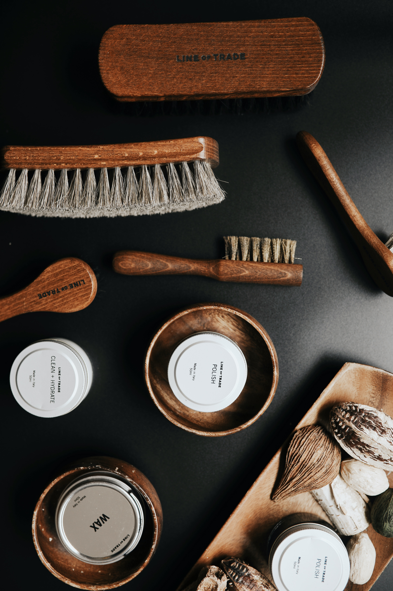

Sobre la Barbería
Ubicada en el corazón de la ciudad, la Barbería Alura trae para el mercado lo que hay de mejor para su cabello y barba. Fundada en 2020, la Barbería Alura ya es destaque en la ciudad y conquista nuevos clientes diariamente.
Nuestra misión es: "Proporcionar autoestima y calidad de vida a nuestros clientes".
Ofrecemos profesionales experimentados que están constantemente observando los cambios y movimiento en el mundo de la moda, para así ofrecer a nuestros clientes las últimas tendencias. El atendimiento posee un padrón de excelencia y agilidad, garantizando calidad y satisfacción de nuestros clientes.
Diferenciales
- Atención personalizada a los clientes
- Espacio diferenciado
- Localización
- Profesesionales calificados

Ubicación
Nuestra barberia se encuentra en el corazón de la villa primavera rodiado de juventud y fiesta